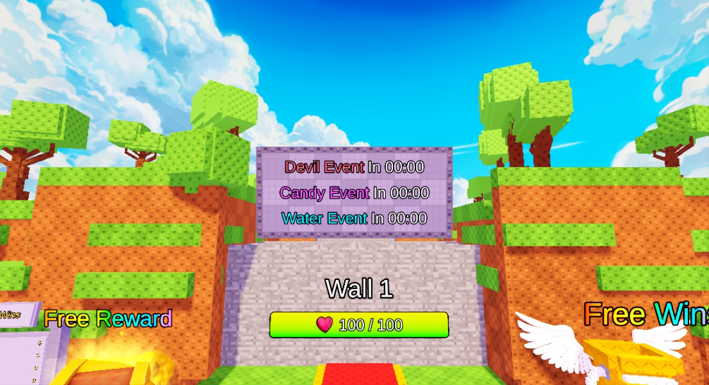
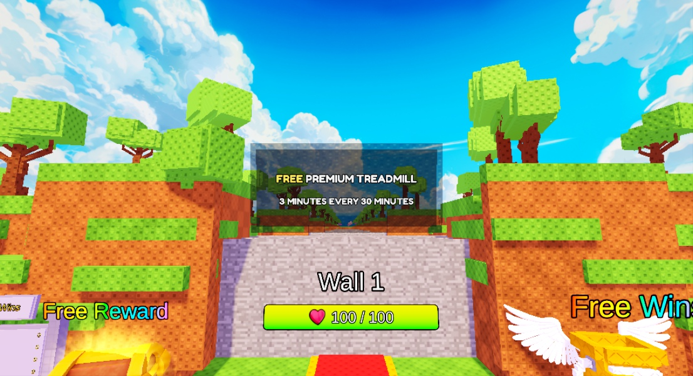
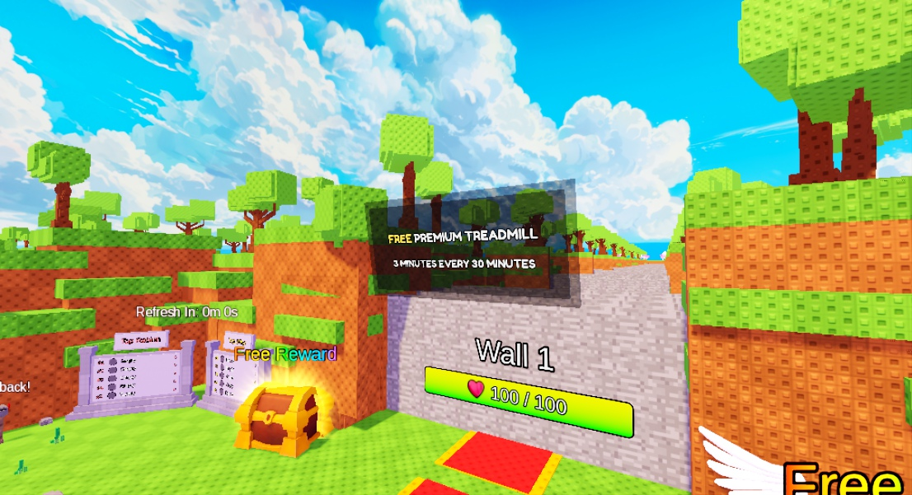

2026-11-19。現在の副本PlaceId 126576845524886／UniverseId 10765181857、Edit状態を確認。開始HEADは1e795c8。前回のLVカーブ作業などの未commit差分を保持し、今回のcommitへ含めない。
対象は購入Mapの既存 Workspace.EventBoard。新しいExperience、ボード、HUD、ポップアップは作成していない。3D本体の2パーツだけをRGB(24,24,24)・Transparency 0.5へ変更。白文字を不透明のまま維持し、FREEだけ黄色で強調した。
| Full Path | 変更前 | 変更後 |
|---|---|---|
| Workspace.EventBoard.Board | Color (129,123,154)、Transparency 0 | Color (24,24,24)、Transparency 0.5 |
| Workspace.EventBoard.Part | Color (91,86,108)、Transparency 0 | Color (24,24,24)、Transparency 0.5 |
| Workspace.EventBoard.Board.Texture | Transparency 約0.8、スタッド柄 | Transparency 1。アセットID・Face・繰返し寸法を保持し、板面の装飾だけ非表示 |
| Workspace.EventBoard.Board.SurfaceGui.Event1 | Devil Event In 00:00、Legacy Arial、TextScaled=true、Size (0.95,0.225) | FREE PREMIUM TREADMILL、FredokaOne 48px、TextScaled=false、Size (0.90,0.30)。FREEは#FFE066、残りは白 |
| Workspace.EventBoard.Board.SurfaceGui.Event2 | Candy Event In 00:00、Legacy Arial、TextScaled=true、Size (0.95,0.225) | 3 MINUTES EVERY 30 MINUTES、FredokaOne 40px、TextScaled=false、Size (0.90,0.20)、白 |
| Workspace.EventBoard.Board.SurfaceGui.Event3 | Water Event In 00:00、Visible=true | 空文字、Visible=false。Instanceは保持 |
| Workspace.EventBoard.Board.SurfaceGui.UIListLayout | Padding.Scale 0.10 | 0.04、中央揃えを維持 |
| Workspace.EventBoard | DisplayEventNameの変更前値は未取得 | 表示用属性DisplayEventName="Free Premium Treadmill"を設定 |
表示ラベル2個はTextTransparency=0、BackgroundTransparency=1。UI背景を黒い半透明パネルにする変更ではない。AutoLocalize=falseで指定英語を固定（変更前のAutoLocalize値は取得していない）。全取得値とその他の差分は変更前記録、差分・検証記録に記載。



画像はEditの実描画。比較中のみ既存ScreenGuiを非表示にし、撮影後に全Enabled値とカメラを復元。画像の読みやすさを確認するための操作で、製品HUDの変更はない。
以前の調査を参照し、現在のSourceを再確認。ReplicatedStorage.Modules.Config.Weather.BoardがこのSurfaceGuiを指定し、StarterPlayer.StarterPlayerScripts.Services.WeatherClient.drawBoardが旧Weatherの3行を更新する。起動元のStarterPlayer.StarterPlayerScripts.MainとServerScriptService.Mainは両方Disabled=true。別の明示的WeatherClient起動元はSource検索で見つからなかった。
全531 Sourceとエディターバッファ、ScriptのDisabled状態を変更していない。旧Mainを将来有効化した場合は旧Weather表示が戻り得るため、その際に表示経路の再調整が必要。再適用ツールはMainの無効状態を検査し、活性化されていた場合は適用を停止する。今回のための常時更新処理は追加していない。
Studioでは上表のBoard／PartのColor・Transparency、Event1／Event2のText・TextSize・Size、UIListLayout.Paddingを直接調整できる。タイトルの黄色はEvent1.TextのRichText色。
Gitでは tools/ApplyEventBoardAppearance.luau 先頭のStyleに色・透過率・文言・文字サイズ・余白を集約。対象副本のEditでファイルのコードを1回実行すると、既存Instanceへ同じプロパティを再適用できる。常駐Scriptではなく、Save／Publishを行わない。
無料開放、30分周期、3分終了、動くカウントダウン、通知、購入誘導、Pass所有、Strength加算は未実装・無変更。時間表記は予定内容の静的説明。将来の最終倍率を7／8へ固定する変更もない。
検証補助を除去し、副本は既存編集を保持した未保存Editで開いたまま。Save／Publish・正本・PR #1・force pushの操作なし。今回のプロパティ再適用記録、比較画像、報告と関連仕様追補だけをcommitし、origin/mainへ通常push。commitは完了回答で報告する。